How concept-graph-xai works¶
concept-graph-xai's promise is that every per-feature interpretability signal your
stack already produces can be re-told at the level your committee actually argues:
business concepts. This article walks one realistic credit-risk scenario end to end —
the same scenario as the
credit-risk walkthrough notebook,
narrated as prose. Each section follows the same shape:
- The question — what you are actually trying to learn.
- The chart — what
concept-graph-xairenders. - Reading it — what each colour, axis, sector means.
- What to do with the answer — the action the chart is supposed to unlock.
- Code — the minimum call to reproduce.
The notebook cell references (e.g. B.1) point to the matching section in the live walkthrough so you can switch between prose and a running kernel.
Running example
The dataset is Kaggle's "Give Me Some Credit" — 150k borrowers, the target is
90-day-plus delinquency. The model is a default-tuned LGBMClassifier. The
interpreter is shap.TreeExplainer. None of that is special to this library; you
bring your own. What is special is the third object: a concept graph
describing how the eleven input features roll up into business concepts.
The pipeline, end to end — the graph is built once, every metric consumes it together with the per-feature values your interpreter produced, and every plot consumes a metric DataFrame:
flowchart TD
T["concept hierarchy<br/>dict / YAML / NetworkX"] --> G["ConceptGraph<br/>validated tree, deterministic DFS preorder"]
M["fitted model / SHAP explainer"] -->|"adapters/*"| V["canonical (values, feature_names)"]
G --> MET["metrics/*<br/>tidy DataFrame per concept path"]
V --> MET
X["X, y (held-out)"] --> MET
G --> P["plotting/*<br/>plotly Figure"]
MET --> P
P --> PNG["static PNG via kaleido<br/>([png] extra)"]Setup (notebook part A)¶
from concept_graph_xai import ConceptGraph
graph = ConceptGraph.from_dict({
"RiskProfile": {
"Demographics": {"Age": ["age"], "Family": ["n_dependents"]},
"Income": ["monthly_income", "debt_ratio"],
"Behaviour": {
"Delinquency": [
"n_30_59_dpd", "n_60_89_dpd", "n_90_plus_dpd",
],
"Utilization": ["revolving_utilization"],
},
}
})
The tree is small but already opinionated. Behaviour > Delinquency groups three
columns the lender thinks of as one signal at three time horizons. Income covers
two distinct features that the credit committee will discuss together.
Demographics > Age carries a PII flag that fairness review cares about.
Most of the library's functions take this graph plus the per-feature output your
interpreter already produced (shap_values, feature_names) and roll it up.
Notebook cells: A.1 (imports), A.2 (data), A.3 (graph), A.4 (LightGBM training), A.5 (SHAP).
Part B — What does my model rely on?¶
The first question after training is always the same: which concepts move the decision, and which ones are dead weight.
B.1 Concept utilization¶
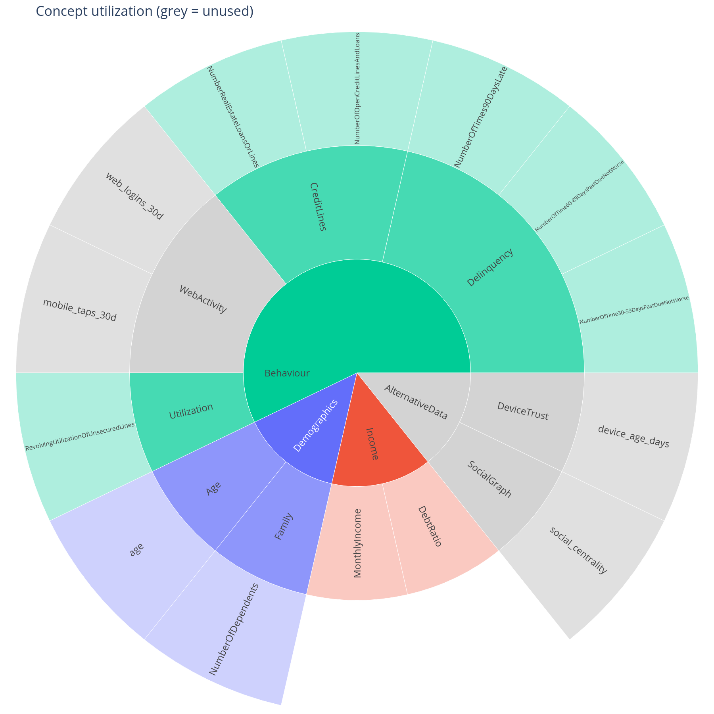
The question. Which branches of the concept tree did the model actually use? Which ones are present in the schema but invisible at inference time?
Reading it. Saturated sectors are concepts whose aggregated importance clears the
threshold. Grey sectors are defined in the tree but the model effectively ignored
them — either because the underlying feature is constant in this data, or because the
tree expanded it once and pruned it. The root sector is hidden so that the top-level
branches occupy the centre ring.
What to do with the answer. Greyed-out concepts are a coverage question for the data team (is this feature actually populated?) and a scope question for the model team (do we still need this column at all?). Saturated sectors are the ones the next sections will explain.
from concept_graph_xai import utilization, utilization_map
util = utilization(graph, feature_names, shap_values, threshold=0.0)
utilization_map(graph, util).show()
Notebook cell: B.1.
B.2 Concept importance with bootstrap intervals¶
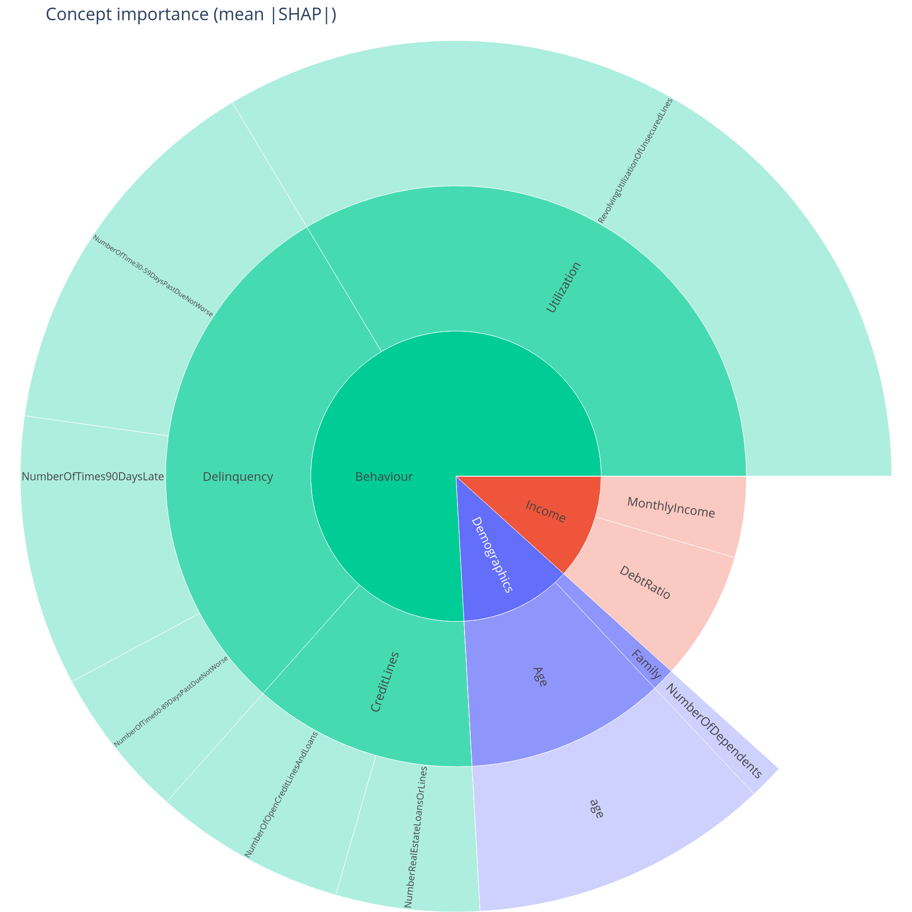
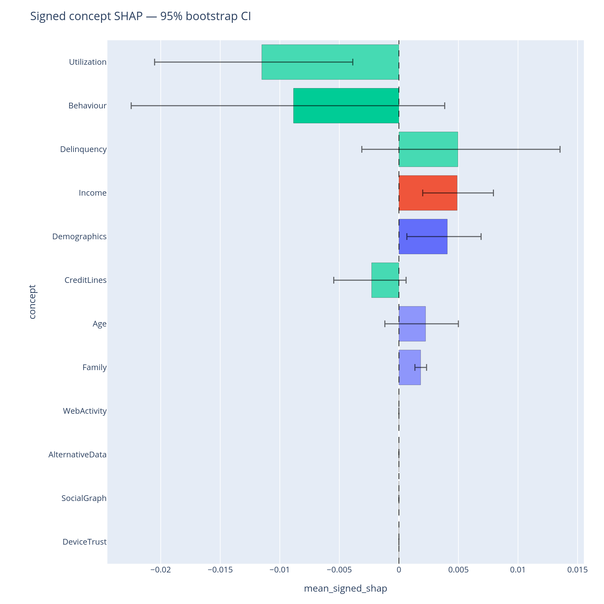
The question. Of the concepts the model uses, how much of the total mean|SHAP| does each one carry — and is that point estimate trustworthy or is it sample noise?
Reading the sunburst. Each concept's sector area is its summed mean|SHAP|:
where \(\phi_{n,f}\) is the SHAP value of feature \(f\) on row \(n\). Hover for the exact
value and the feature_count carried in that subtree. The colour follows the top-level
branch, lightened with depth, so a Behaviour > Delinquency leaf is a paler shade of
the same hue as its parent.
Reading the bar chart. The horizontal bars are bootstrap percentile confidence
intervals (1000 resamples here; the default is n_bootstrap=200 at a 95% CI). A bar
that crosses the next-ranked concept's interval means the ordering is not statistically
separable on this sample — the committee should not insist on a "Behaviour is bigger
than Income" claim from the point estimate alone.
What to do with the answer. Lock the ordering you can defend. Promote concepts with tight intervals to the executive summary; flag the ones with overlapping intervals as "comparable" rather than "ranked".
from concept_graph_xai import (
bootstrap_importance, importance_sum, signed_concept_bar, sunburst,
)
sunburst(graph, importance_sum(graph, feature_names, shap_values),
value="importance_sum").show()
boot = bootstrap_importance(graph, feature_names, shap_values,
n_bootstrap=1000, random_state=42)
signed_concept_bar(graph, boot).show()
Notebook cell: B.2.
Part C — How does the signal compose?¶
Part B told you which concepts matter. Part C asks how they work together — which pairs interact, and how does each row's prediction flow through the tree.
C.1 Concept × concept interaction matrix¶
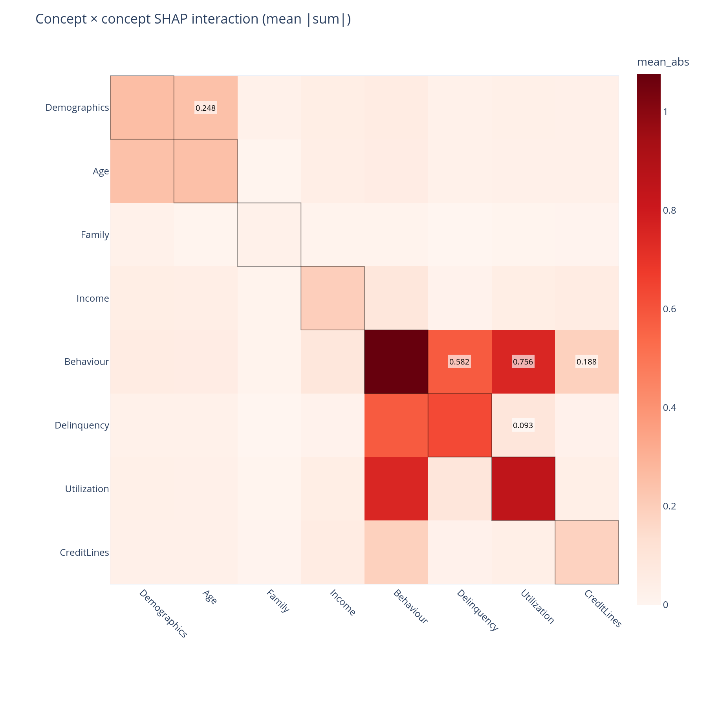
The question. Does the model use concepts independently, or does Income and Behaviour together carry a non-additive signal that neither carries alone?
Reading it. The matrix aggregates SHAP interaction values up the tree. Diagonal cells are the within-concept self-interaction (a non-zero value means the concept's features interact with each other); off-diagonal cells are between-concept interactions. Both halves are rendered (the matrix is symmetric) so the visual is unambiguous.
What to do with the answer. A large off-diagonal cell — Income × Behaviour, say — means a univariate "what does Income contribute" answer is incomplete; the contribution depends on the behavioural context. That belongs in the model report.
from concept_graph_xai import (
concept_interaction_heatmap, concept_interaction_matrix,
)
inter = concept_interaction_matrix(graph, feature_names,
shap_interaction_values)
concept_interaction_heatmap(inter).show()
Notebook cell: C.1. SHAP interaction values are expensive (
O(F²)); compute them once and cache.
C.2 Feature → concept → ±outcome Sankey¶
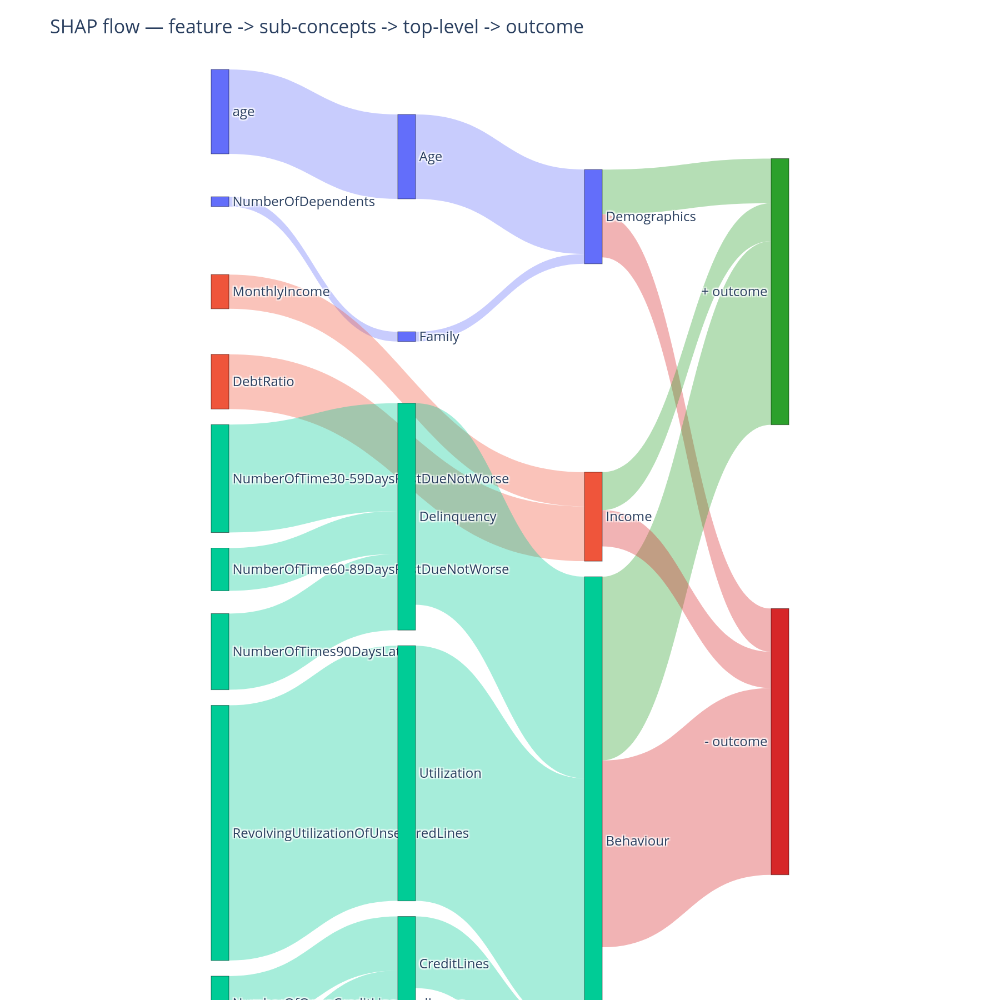
The question. For the average prediction, where does the signal enter the tree (which feature contributes most), where does it aggregate (which mid-level concept absorbs that contribution), and which direction does it push the outcome?
Reading it. Left: features. Middle: one tier per concept level, nested
top-to-bottom in DFS preorder so siblings sit together — for deep trees this produces
multiple intermediate tiers (feature → sub-concept → top-level concept). Right: the
±outcome bucket. Link width is summed magnitude; link colour inherits the source
feature's branch hue. Each top-level concept splits its flow between +outcome and
-outcome: rows where its summed contribution pushes the prediction up feed the +
band, rows where it pushes down feed the - band.
What to do with the answer. This is the chart for the model narrative — the one slide that shows a non-technical audience how the signal physically moves from raw column to decision.
from concept_graph_xai import concept_sankey
concept_sankey(graph, feature_names, shap_values).show()
Notebook cell: C.2.
Part D — Why this prediction?¶
Parts B-C describe the model's average behaviour. Adjudication and adverse-action notices need single-row explanations.
D.1 Concept violin¶
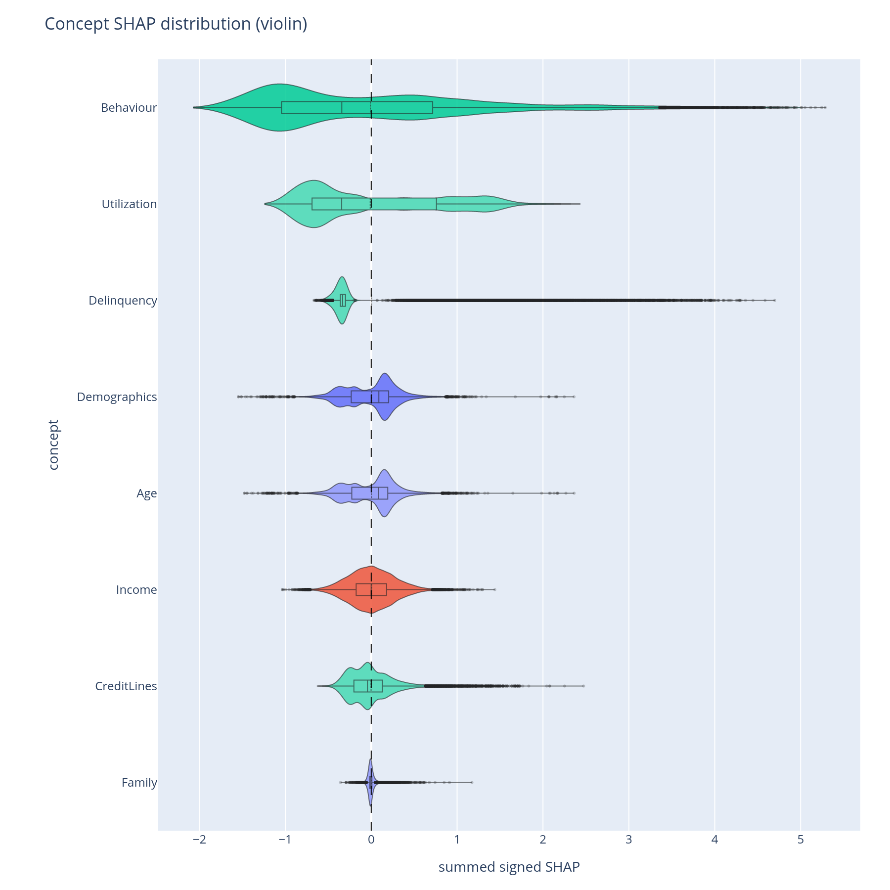
The question. For each concept, what is the distribution of its contribution across all predictions — is it usually a small nudge or occasionally a large one?
Reading it. Each violin shows the per-sample concept-level SHAP (summed over descendant features) for one concept. Width at a given y-value is the density of rows with that contribution. Long thin tails mean the concept is normally quiet but occasionally swings the prediction by a lot.
What to do with the answer. Concepts with long tails are the ones to inspect at the row level — typical adjudication cases happen in the tail. Concepts with tight central mass are background contributors and rarely surface in single-row explanations.
from concept_graph_xai import concept_violin
concept_violin(graph, feature_names, shap_values).show()
Notebook cell: D.1.
D.2 Concept waterfall¶
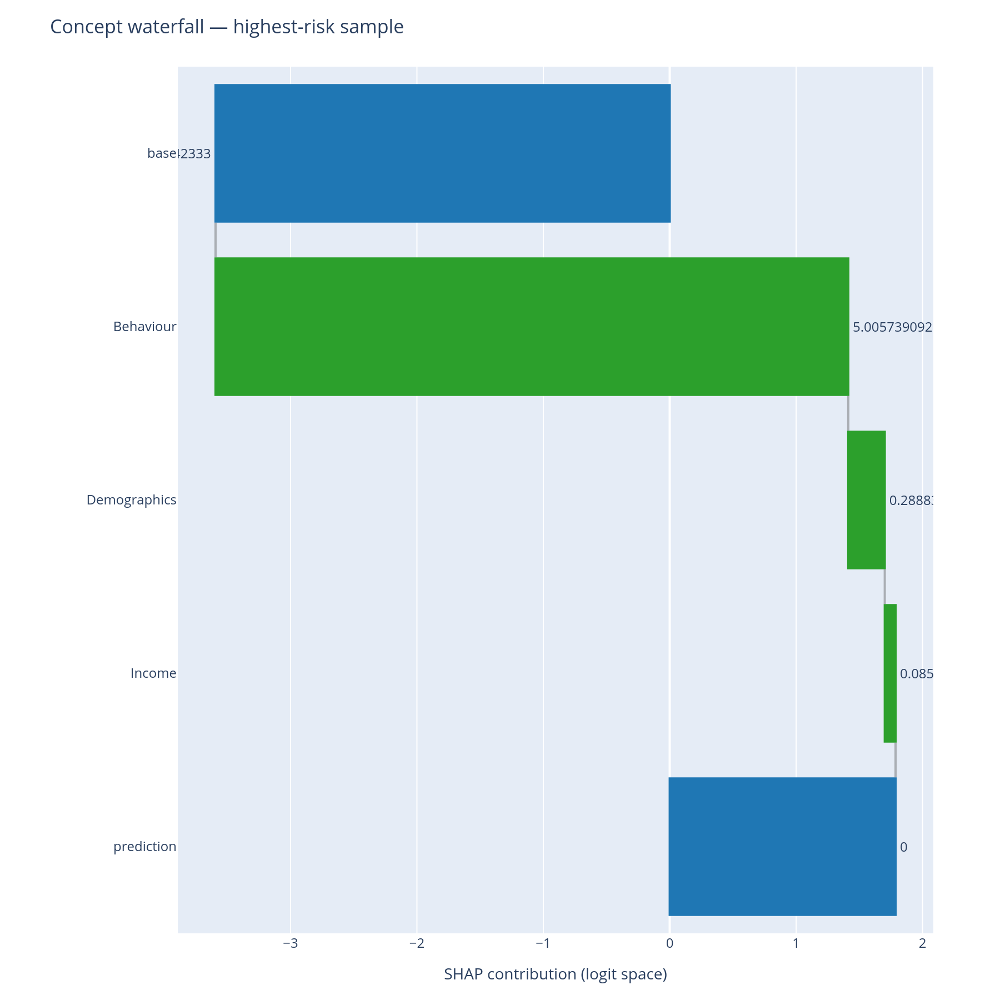
The question. For this specific prediction, which concepts pushed it up, which pushed it down, and what was the net?
Reading it. A standard SHAP waterfall, except the bars are concepts rather than
only features. Top: model base value. Each bar adds or subtracts the concept's
row-level contribution (green = pushes the prediction up, red = pushes it down).
Bottom: the model's predicted logit for this row. The depth parameter controls how
deep into the tree to roll up; depth=1 keeps the explanation at the level
Income/Behaviour, depth=2 descends to Delinquency vs Utilization.
What to do with the answer. This is the chart the adjudicator sees. The reviewer answers "the model declined this loan because Behaviour > Delinquency was the dominant push, with Income partially offsetting" — a sentence the regulator's expected formulation.
from concept_graph_xai import ConceptPredictionExplainer
explainer = ConceptPredictionExplainer(graph, model, X, shap_values,
base_value=expected_value)
explainer.waterfall(highest_risk_idx, depth=1).show()
explainer.waterfall(highest_risk_idx, depth=2).show()
Notebook cells: D.2a (highest), D.2b (lowest), D.2c (depth-2 roll-up).
Part E — Is my concept tree any good?¶
Parts B-D assumed the tree was sensible. This section interrogates the tree itself before the review meeting where someone else will.
E.1 Block-structured feature correlation¶
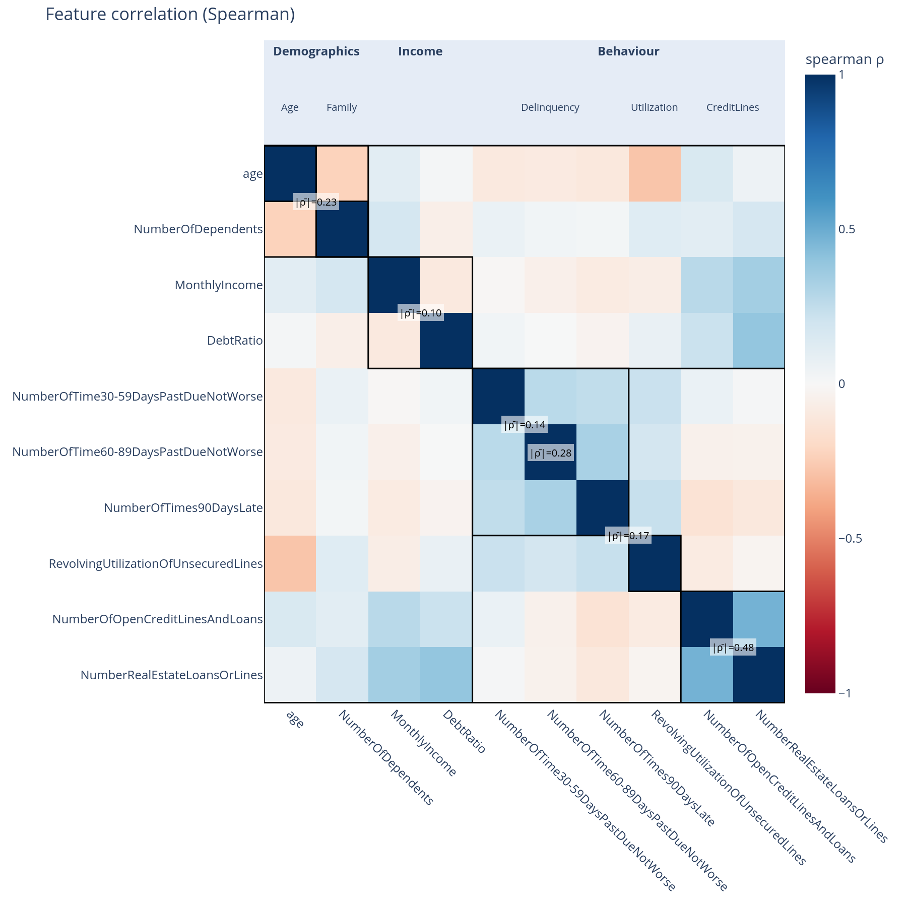
The question. Are features inside a concept correlated with each other (within-concept coherence)? Are concept boundaries leaky (off-diagonal correlation across siblings)?
Reading it. A Spearman correlation matrix, but features are ordered along the graph's DFS preorder so every concept forms a contiguous block. Each diagonal block is annotated with its within-block mean|ρ|. Black separator lines bound the top-level concepts.
What to do with the answer. A diagonal block that is uniformly white means "these features are not really related" — the concept may be a kitchen-sink grouping. A high off-diagonal block between two sibling concepts means "the boundary is in the wrong place" — that pair of concepts probably wants to be merged or re-cut.
from concept_graph_xai import correlation_block, feature_correlation
fc = feature_correlation(graph, X, method="spearman")
correlation_block(fc, title="Feature correlation").show()
Notebook cell: E.1. The same
correlation_blockplot is reused for nullity (E.2) and SHAP (E.5) — different input, same shape.
E.2 + E.3 Whole-branch missingness¶
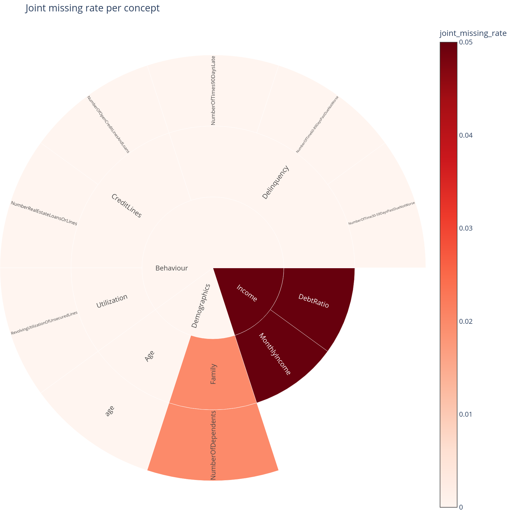
The question. If a concept's data went missing in production (upstream feed outage, vendor cutoff), would it tend to go missing as a whole block, or just one feature at a time?
Reading it. The sunburst sizes each sector by the fraction of rows where every descendant feature was simultaneously null. A large sector means whole-branch outages are realistic; a small sector means single-feature outages dominate.
What to do with the answer. This calibrates how seriously to take the ablation results in Part H. If joint-missing-rate is near zero, the "concept goes missing" simulation is pessimistic — the real operational risk is per-feature gaps. If joint-missing-rate is high, the simulation reflects reality and the AUC-drop numbers belong in the operational-risk register.
from concept_graph_xai import joint_missing_map, joint_missing_rate
joint_missing_map(graph, joint_missing_rate(graph, X)).show()
Notebook cells: E.2 (nullity correlation block), E.3 (joint missing-rate sunburst).
E.4 Concept-coherence vs concept-importance scatter¶
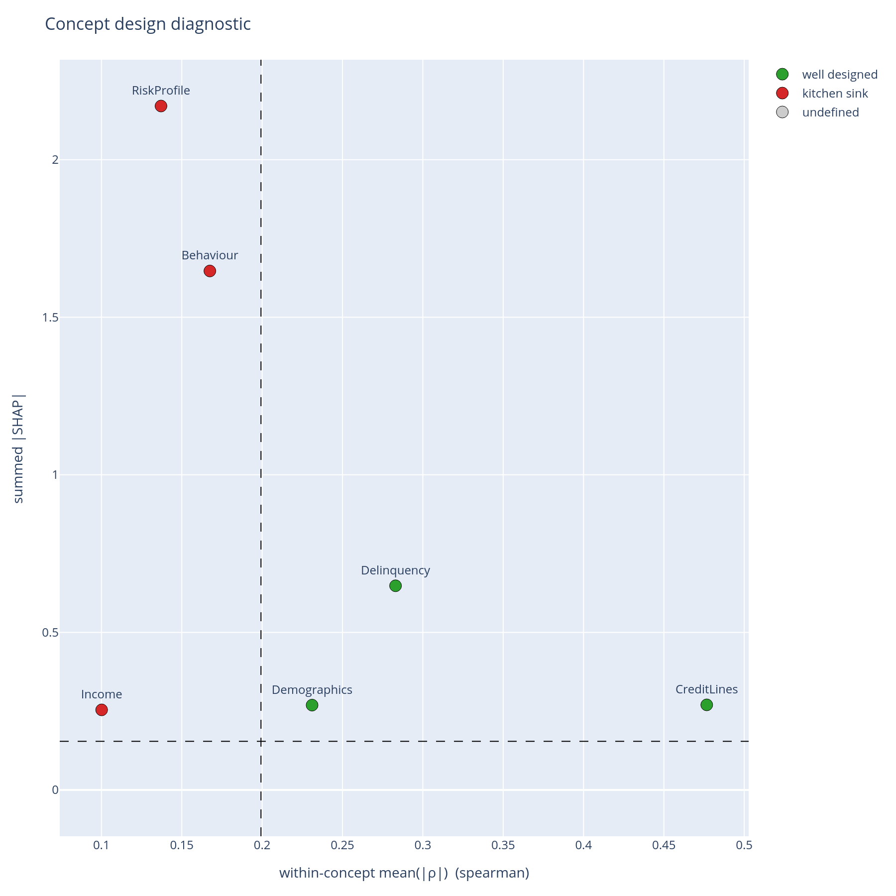
The question. Is each concept both coherent (its features cluster together in the data) and important (the model leans on it)?
Reading it. One point per concept. X = within-concept mean(|ρ|); Y = summed |SHAP|. Dashed lines at the medians cut the plane into four quadrants:
| Quadrant | Read | Action |
|---|---|---|
| Top-right (high coherence, high importance) | "Well-designed" | Keep. Document. |
| Top-left (low coherence, high importance) | "Kitchen sink" | Split. The model relies on this concept but the concept itself is heterogeneous. |
| Bottom-right (high coherence, low importance) | "Redundant" | Merge or drop. Coherent but unused. |
| Bottom-left (low coherence, low importance) | "Noise" | Drop. Adds bookkeeping cost without explanatory value. |
What to do with the answer. This is the slide for the tree-design review. A concept in the kitchen-sink quadrant is the most important kind of finding — the model needs this signal, but the way the signal has been named is misleading.
from concept_graph_xai import (
coherence_importance, coherence_importance_scatter,
)
coh = coherence_importance(graph, X, feature_names, shap_values)
coherence_importance_scatter(coh).show()
Notebook cell: E.4. The thresholds default to the medians across concepts; pass
coherence_threshold=/importance_threshold=for absolute cutoffs.
E.5 + E.6 SHAP correlation and the regulatory overlay¶
E.5 (SHAP correlation block, same plot as E.1 but on shap_values instead of X)
answers a different question: does the model treat two features as substitutes
regardless of how correlated they are in the data? Two raw-uncorrelated features can
be SHAP-redundant; two raw-correlated features can be SHAP-different. Disagreement
between E.1 and E.5 is informative.
E.6 (regulatory tag overlay) is a single sunburst whose sectors are coloured by
metadata["tag"] on each node — PII vs. financial vs. behavioural vs.
bureau-supplied. The chart visually answers "what fraction of the model's importance
flows through PII?" in one glance.
from concept_graph_xai import (
correlation_block, importance_sum, regulatory_tag_overlay, shap_correlation,
)
sc = shap_correlation(graph, feature_names, shap_values)
correlation_block(sc, title="SHAP correlation").show()
imp = importance_sum(graph, feature_names, shap_values)
regulatory_tag_overlay(graph, imp, value="importance_sum", tag_key="tag").show()
Notebook cells: E.5, E.6.
Part F — Does importance differ across cohorts?¶
The model has one global behaviour described in Part B. Operationally, it has several behaviours — one per segment.
F.1 Segment × concept heatmap¶
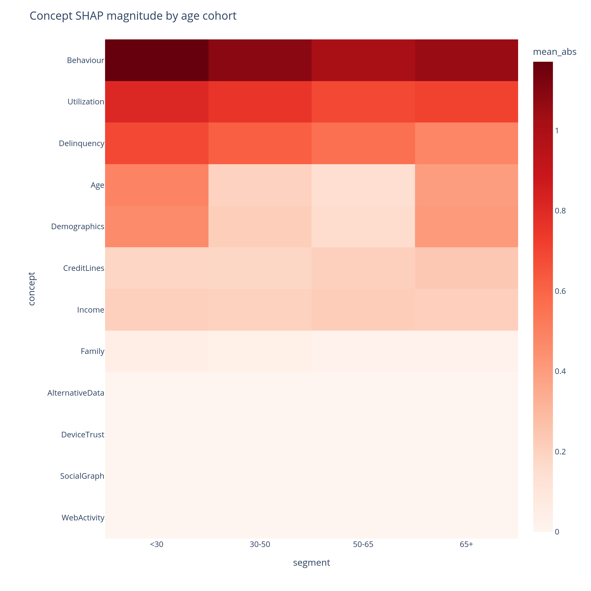
The question. For each (segment, concept) pair, what is the mean|SHAP| contribution of that concept in that segment?
Reading it. Rows are concepts (DFS preorder), columns are segments (e.g. age
buckets, geography, channel), colour is mean|SHAP|. A row that is uniformly red means
"this concept always matters"; a row with a single dark column means "this concept
matters only for that segment". Hover shows the per-cell value and the
feature_count of the concept.
What to do with the answer. A concept that matters in one segment and not others is a place to look for a segment-specific failure mode — a missing-data pattern, a label-shift, a sub-population the training data under-represented.
from concept_graph_xai import (
segment_concept_heatmap, segment_importance,
)
seg = segment_importance(graph, feature_names, shap_values,
segments="age_bucket", X=X)
segment_concept_heatmap(graph, seg).show()
Notebook cell: F.1.
segments=accepts either a pandas Series aligned toshap_valuesrows or a column-name string referencingX.
F.2 Concept-importance Pareto per cohort¶
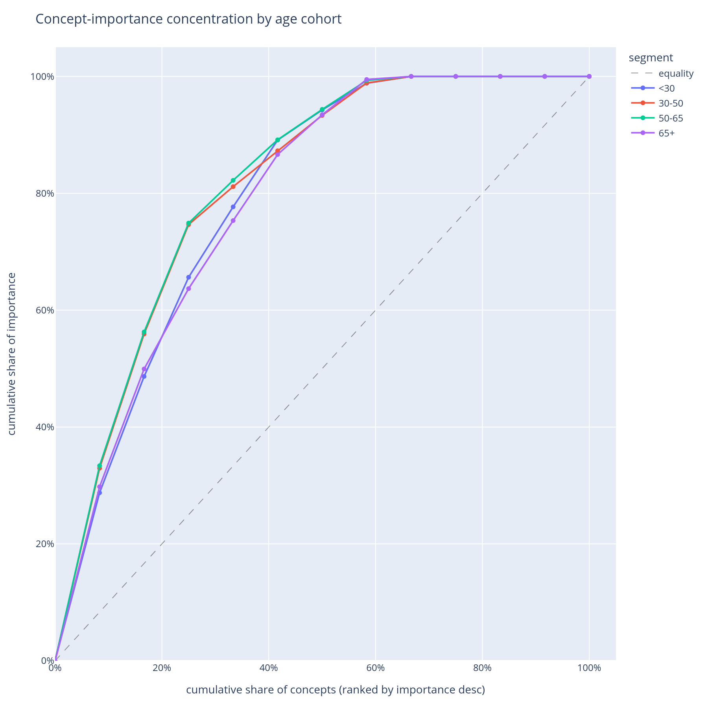
The question. Within each cohort, do a few concepts carry most of the explanation (steep Pareto) or is the importance spread across many (flat Pareto)?
Reading it. One curve per cohort. X = concept rank within cohort. Y = cumulative share of that cohort's total |SHAP|. A steep curve means the model is concentrated on a few concepts for that cohort; a flat curve means it spreads its attention.
What to do with the answer. Concentration is fragility: a model that depends on three concepts for the senior cohort is more brittle to those three concepts shifting than a model that depends on ten. This becomes the "diversification" axis of the operational-risk view.
from concept_graph_xai import concept_pareto
concept_pareto(graph, seg).show()
Notebook cell: F.2.
Part G — Where does the model behave differently across protected groups?¶
Fairness review needs a chart that says, for each concept, how differently the model treated group A vs. group B.
G.1 Concept disparity heatmap¶
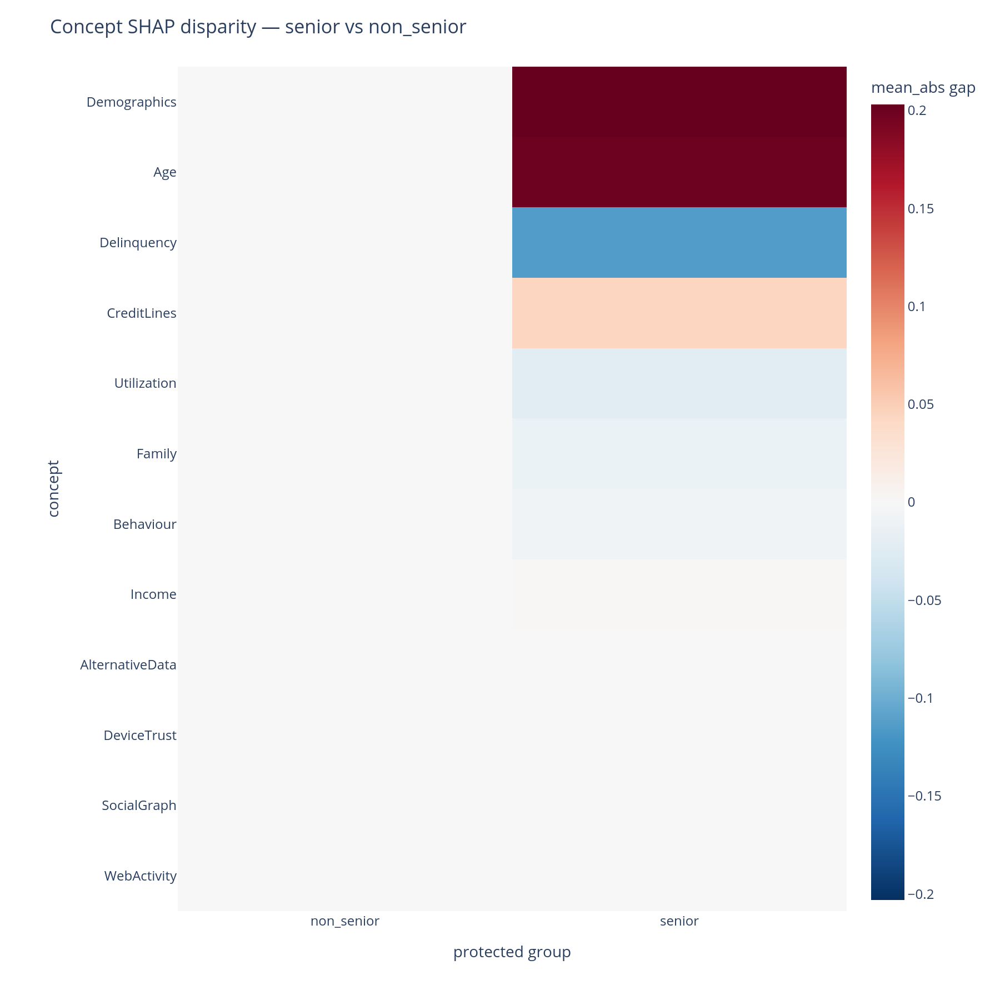
The question. For each (concept, protected-group) pair, what is the disparity in mean|SHAP| against a reference group? Where in the tree does the model treat seniors differently from non-seniors?
Reading it. Rows are concepts; columns are protected groups, each compared against
the explicit reference group (whose own column is exactly zero, kept as a visible
baseline). Cell colour encodes the signed gap (diverging palette around zero). A red
cell means that group received a larger mean|SHAP| contribution from that concept than
the reference; a blue cell is the reverse.
What to do with the answer. Large-magnitude cells flag concepts in which the model behaves differently across groups. Whether that difference is a fairness issue depends on the legal framing — for some attributes any disparity is reportable; for others, only disparities that cannot be justified by an upstream business necessity. Either way, this is the chart for the conversation.
from concept_graph_xai import (
concept_disparity, concept_disparity_heatmap,
)
disp = concept_disparity(graph, feature_names, shap_values,
protected="senior_flag", reference="non_senior",
X=X)
concept_disparity_heatmap(graph, disp).show()
Notebook cell: G.1.
Part H — What if data goes missing, or my model has drifted?¶
Two failure modes that are not visible at training time.
H.1 AUC drop under whole-branch ablation¶
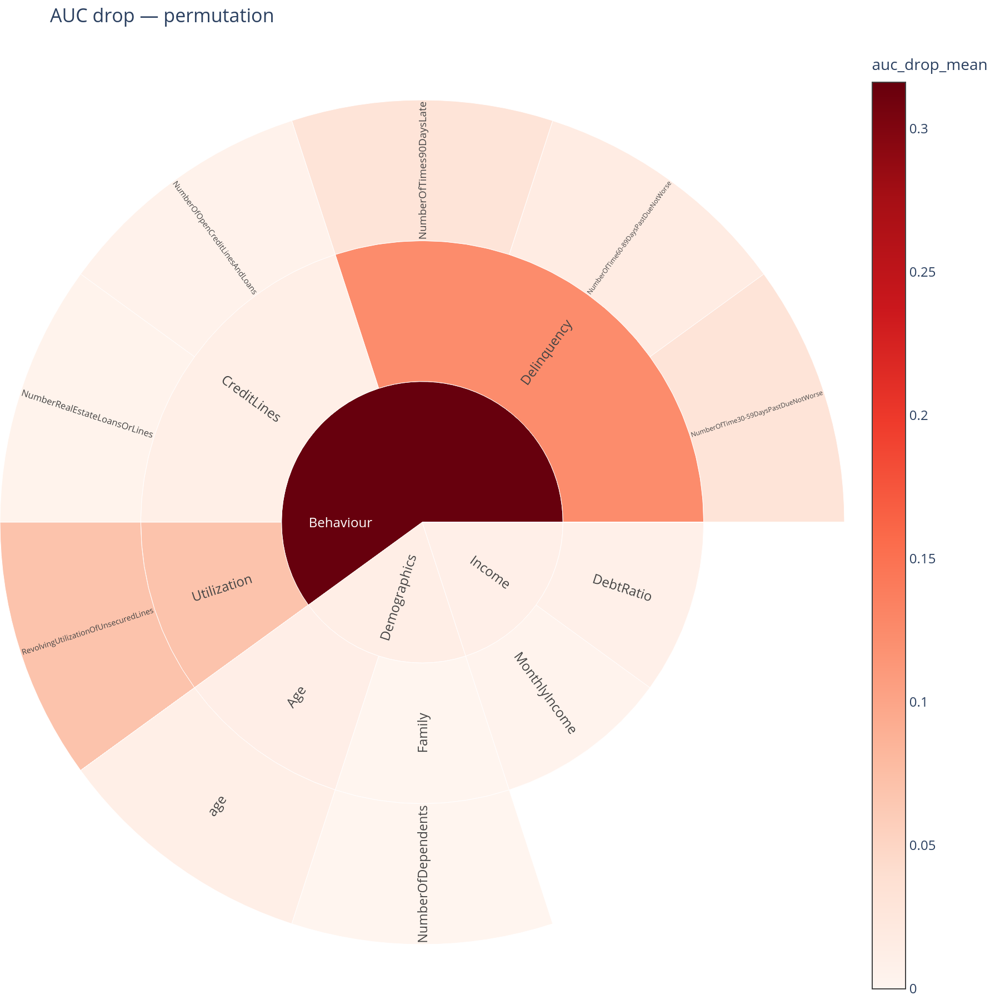
The question. If a whole concept's data went missing in production, how much AUC would the model lose?
Reading it. A sunburst where each sector's size is its AUC drop (mean of ten permutation repeats by default). A large sector is a concept the model cannot afford to lose. The root sector is suppressed: ablating the root means "the model gets pure noise" and trivially tanks the score, which would dominate the colour scale.
What to do with the answer. Cross-reference with the joint-missing-rate sunburst from E.3. A concept that is both high-AUC-drop and high-joint-missing-rate is a real operational risk and belongs in the runbook. A concept that is high-AUC-drop but low-joint-missing-rate is a theoretical risk worth watching but not necessarily worth mitigating.
from concept_graph_xai import auc_drop, auc_drop_map
drop = auc_drop(graph, model, X_test, y_test,
feature_names=X_test.columns.tolist(),
strategy="permutation", n_repeats=10, random_state=42)
auc_drop_map(graph, drop).show()
Notebook cell: H.1. Three strategies are available —
permutation(cheap, model-agnostic, the default),retrain(most faithful, most expensive),shap_marginal(approximation, almost free). See the robustness page for the trade-offs.
H.2 + H.3 Drift across periods¶
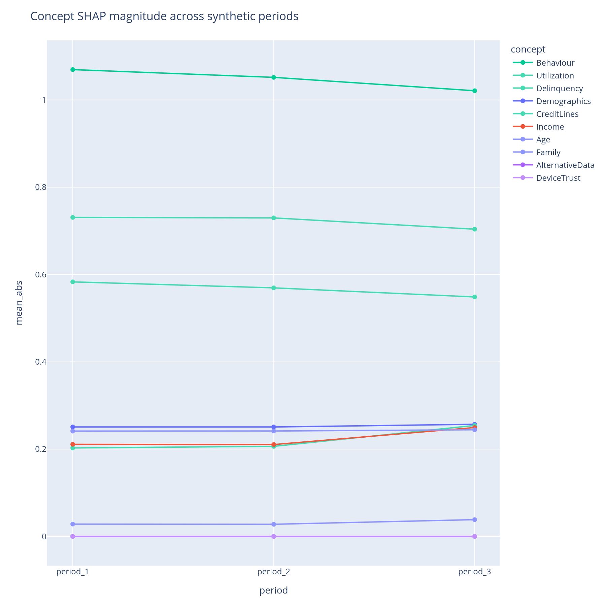
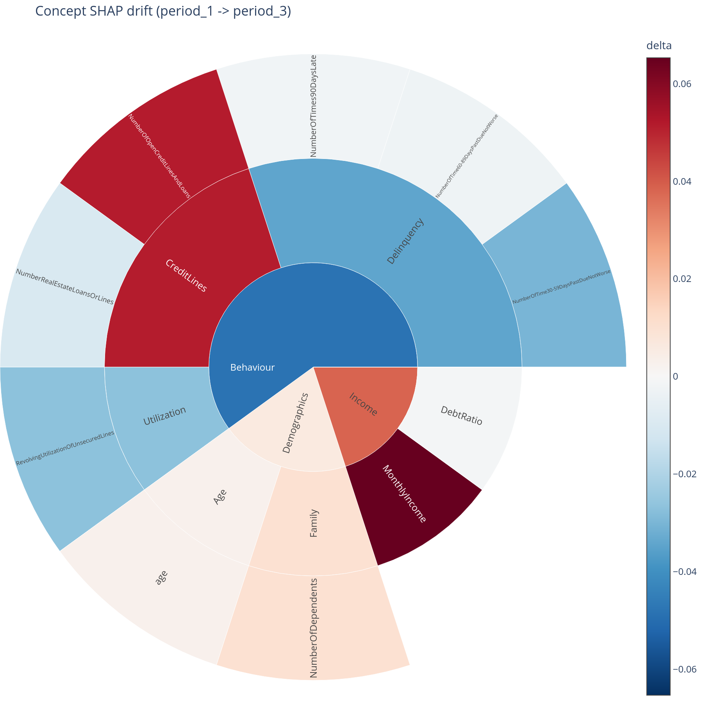
The question. Across two or more time periods (or model versions, or geographies), is each concept's contribution stable? Where is the drift concentrated?
Reading the lines. One line per concept, x = period in the order you supplied,
y = mean|SHAP| for that concept in that period. Lines are sorted by
max-across-periods so the most prominent concepts list first; an optional
max_concepts= cap keeps the chart legible.
Reading the sunburst. A delta view: baseline period vs. target period. Sector area = concept's total contribution; colour = direction and magnitude of change (diverging palette). Red sectors got more important; blue sectors got less.
What to do with the answer. Lines tell you whether drift happened. The sunburst tells you where in the tree the drift is — which is the right format for retraining decisions ("we will retrain when Behaviour > Delinquency moves by more than X mean|SHAP|").
from concept_graph_xai import (
attribution_drift, concept_drift_delta, concept_drift_lines,
concept_drift_sunburst,
)
# One (label, shap_values, feature_names) tuple per period, in order.
periods = [
("2024Q1", shap_q1, feature_names),
("2024Q4", shap_q4, feature_names),
]
dr = attribution_drift(graph, periods)
concept_drift_lines(graph, dr, max_concepts=8).show()
delta = concept_drift_delta(graph, periods,
baseline="2024Q1", target="2024Q4")
concept_drift_sunburst(graph, delta).show()
Notebook cells: H.2 (lines), H.3 (sunburst).
Part I — Export¶
Every plot returns a plotly.graph_objects.Figure, so static-PNG export is a
one-liner via kaleido:
fig.write_image("importance.png", scale=2)
The walkthrough notebook's Part I
dumps the full set into an out/ directory next to the notebook, which is what
produced every image on this page.
Where to go next¶
- Pick a question to dig into from the Concepts section — each page is one of the workflow questions above, with the API in full and the common pitfalls flagged:
- Bring your own graph following the concept graphs reference.
- API reference.